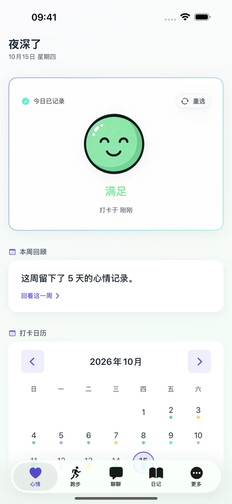
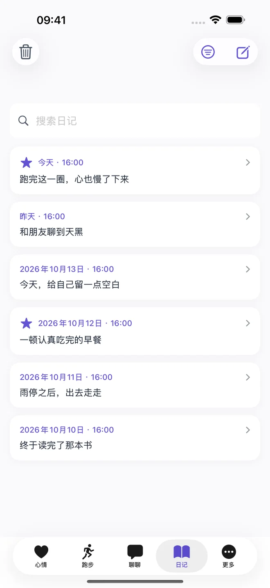
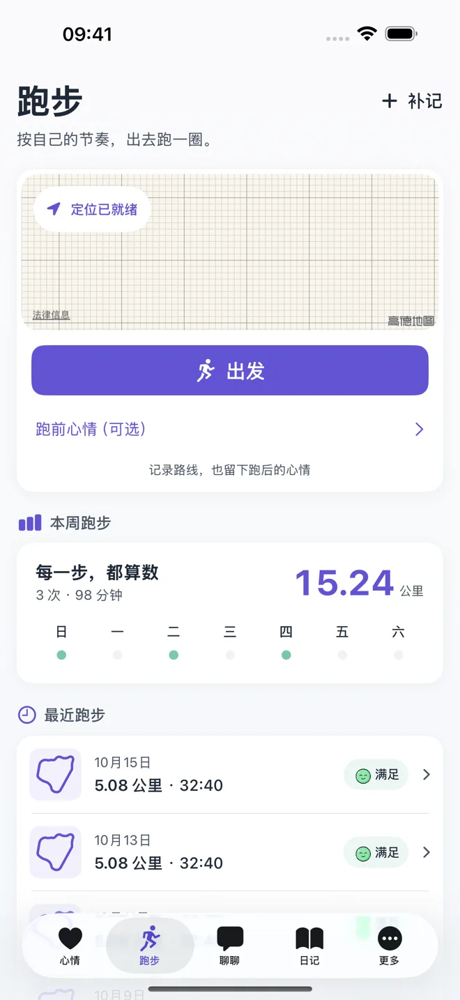

1.1.1 已上架 App Store
心跳日记
心情有处安放，
生活有迹可循。
免费的心情记录、生活日记和跑步记录 App。选一种心情，写几句日记，或者出去跑一跑。在自己的节奏里，把今天留下来。
免费下载，含可选 App 内购买。基础记录无需注册或订阅。
iPhone 与 iPad：iOS / iPadOS 16.0+
配对 Apple Watch：watchOS 9.0+

1.1.1，让每次记录更安心。
已于 上架。查看 App Store 版本记录。
- 阅读更舒适
- 更新心情、日记、跑步、聊聊和设置页面，改善深色模式、大字号与 iPad 阅读；优化 iPhone Duo 双屏和折叠布局。
- 编辑更踏实
- 加强编辑草稿的离开确认和备份恢复保护；保存失败时保留输入，便于继续处理。了解草稿与保存。
- 日常更顺手
- 修复部分地区跑步距离输入解析、聊天交互和记录保存问题。基础记录继续免费，AI 仍由你选择是否开启。
每一种心情，都有自己的模样。
十种心情，轻轻一点就记下。想说得更多时，再留一句备注。
- 开心
- 满足
- 期待
- 平静
- 专注
- 疲惫
- 焦虑
- 沮丧
- 生气
- 难过
写下心事，也记下脚步。
心跳日记（Pulse Diary: Mood & Running）把心情记录、生活日记与跑步放在一起。你可以只用其中一种。
- 心情与日历
- 选心情、补备注，在日历里回看。心情周报在本机生成，看看这一周留下的记录。
- 日记与回顾
- 随时写，按日期找，也能全文搜索和收藏。阅读已有日记后点「编辑」即可修改，未保存离开时会提醒。用一天的回顾串起心情、日记与跑步。
- 跑步与路线
- 记录距离、用时与跑后心情。支持手动补记；授权定位后可记录轨迹、暂停和继续，路线保存在本机。
- 更顺手的记录
- 可选每日提醒、应用锁和本地备份。通过小组件查看心情，在配对的 Apple Watch 上记录心情。


自己的记录，
自己决定怎么用。
心情、日记、聊天、跑步与长期记忆主要保存在本机。无需账号，本地记录可离线使用；换机前请主动导出备份。
备份包含敏感内容，当前不自动加密。没有 App 自建的云端日记同步。
了解数据保存与删除需要时，再开启 AI。
明确同意后，可以聊聊，或把聊天整理成日记草稿和总结。请求经开发者 HTTPS 后端发送给 DeepSeek，需要联网。
心情、日记、长期记忆和个人资料的附加权限默认关闭，可分别控制。AI 回复可能不准确，本 App 不提供医疗诊断、治疗或专业心理咨询。
管理 AI 内容权限记录免费，AI 额度按需选择。
心跳 Plus 提供更多 AI 聊天与生成额度。月付和年付权益相同。
| 功能与额度 | 免费版 | 心跳 Plus |
|---|---|---|
| 心情、日记、跑步、周报、搜索、收藏、应用锁、本地备份 | 包含 | 包含 |
| 每月 AI 聊天 | 30 轮 | 600 轮 |
| 每月日记生成与聊天总结（共用） | 3 次 | 60 次 |
| 本设备首次使用赠送 | 20 轮聊天 + 2 次生成 | 无需订阅即可获得 |
额度按 UTC 自然月重置（北京时间每月 1 日 08:00），不结转；年付不会一次发放全年额度。一轮为一次发送和一次有效回复，生成日记与总结共用额度；重新生成占用一次额度，失败不扣除，自动重试不重复扣除。
中国大陆月付 ¥18 / 月、年付 ¥128 / 年；美国月付 $2.99 / 月、年付 $24.99 / 年。其他地区及最终价格以 App 内 Apple 购买确认页为准。
订阅自动续期，付款由 Apple 处理。可在系统中取消续订，取消后权益保留至当前付费周期结束；已有记录仍可查看和导出。
下载前，快速了解。
- 支持设备
- iPhone、iPad，以及配对的 Apple Watch。小组件和手表只显示心情摘要，不显示日记正文或跑步轨迹。
- App 语言
- 简体中文、繁体中文、英语、西班牙语、法语、德语、日语、韩语、巴西葡萄牙语、俄语、阿拉伯语、印地语、印度尼西亚语，共 13 种，跟随系统语言。
- 官方网站语言
- 简体中文与英文。Read the English website。
- 遇到问题
- 先查阅技术支持，或写信至 281916057@qq.com。请提供版本、设备与复现步骤。
产品信息核对于 2026-10-29。版本、兼容性与下载状态来源于 App Store；功能与数据说明由开发与支持联系人卫智超维护。